Mecanização agrícola:
Sistemas complementares ao motor
Gustavo Frosi
Instituto Federal do Paraná
Curso Superior em Engenharia Agronômica
21 de agosto de 2026
Como funciona um motor?
Sistemas complementares
Sistemas complementares
- Sistema de alimentação;
- Sistema de arrefecimento;
- Sistema de lubrificação;
- Sistema de partida;
- Sistema de exaustão;
- Combustíveis;
- Lubrificantes.
Sistema de alimentação
Conjunto de mecanismos com a função de alimentar o motor com a quantidade adequada de ar e de combustível.
Dois circuitos:
Alimentação de ar;
Alimentação de combustível (Diesel).
Sistema de alimentação
Sistema de alimentação
Circuito de alimentação de ar:
É o circuito que distribui o ar para o motor. Ar limpo e livre de impurezas.
Funcionamento em 3 etapas:
- Admissão;
- Filtragem;
- Exaustão.
Sistema de alimentação
Tipos de filtro:
- Pré-filtro: Responsável por reter partículas maiores por meio de centrifugação.
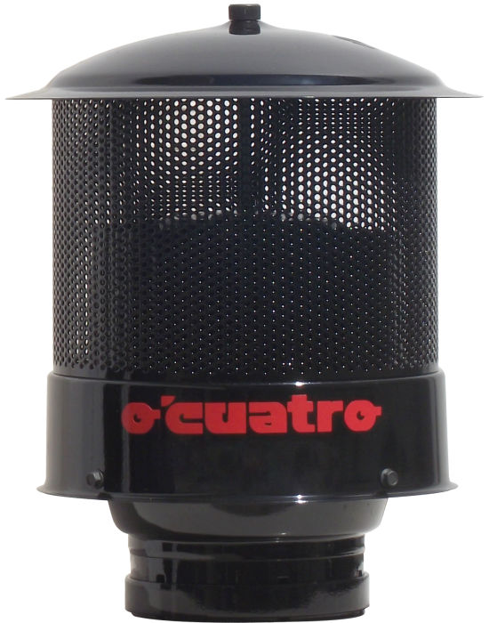
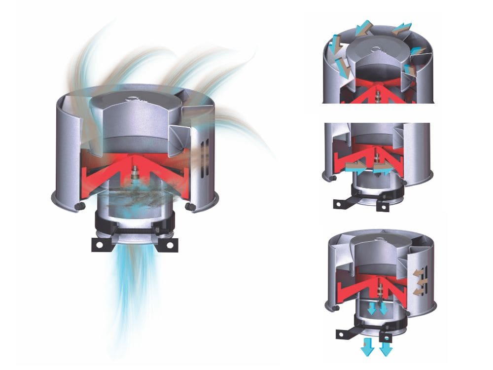
Sistema de alimentação
Tipos de filtro:
- Pré-filtro: Responsável por reter partículas maiores por meio de centrifugação.
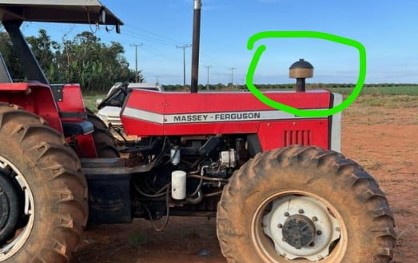
Sistema de alimentação
Tipos de filtro:
- Banho de óleo: O ar entra em contato com uma cuba de óleo, onde as partículas menores são retidas.
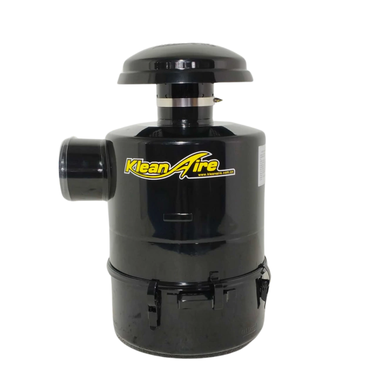
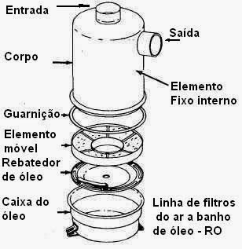
Sistema de alimentação
Tipos de filtro:
- Filtro de cartucho: O filtro primário é de papel e o secundário de feltro. Retêm quase a totalidade das partículas sólidas em suspensão.
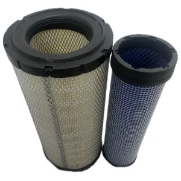
Sistema de alimentação
Aspiração natural:
- Motor de aspiração natural trabalha com a pressão atmosférica para preencher os cilindros de ar;
- Tempo de abertura da válvula de alimentação é menor;
- Limitação da potência do motor.
Sistema de alimentação
Sobrealimentação:
- Aumento da entrada de ar no motor;
- Maior preenchimento de ar dentro do cilindro;
- Aumento da capacidade de geração de potência do motor;
- Não utiliza rotações altas;
- Aumenta o calor;
- Desgaste dos componentes;
- Aumenta o volume de ar no cilindro;
- Permite injeção de mais combustível;
- Aumento da potência e torque (30%).
Sistema de alimentação
Sobrealimentação:
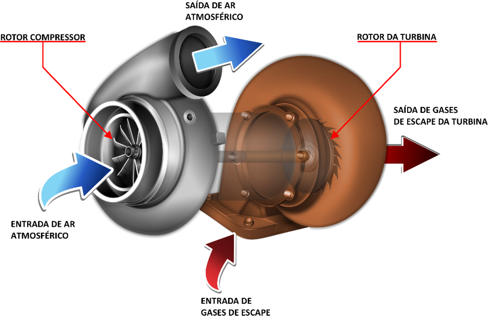
Sistema de alimentação
Intercooler:
- Sistema de troca de calor;
- Ar-ar (mais comum);
- Ar-água;
- Reduz a temperatura do ar enviado aos cilindros;
- Ar com temperatura ~200ºC;
- Ar frio… volume menor, mais concentração dentro do cilindro.
- Mais potência.
Sistema de alimentação
Sobrealimentação:
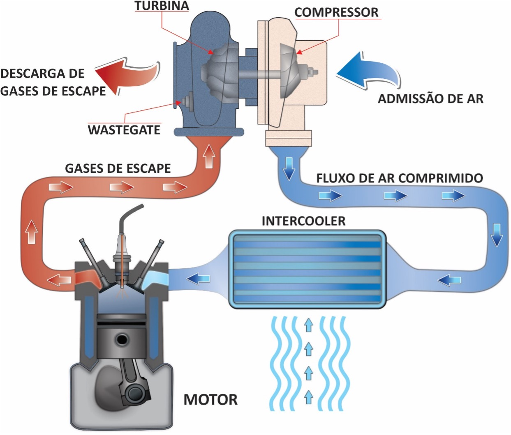
Sistema de alimentação
Sobrealimentação:
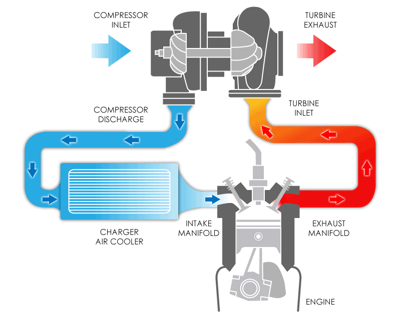
Sistema de alimentação
Circuito de alimentação de combustível:
É o circuito que tem a função de pulverizar o combustível na câmara de combustão em partículas finas.
- Tanque;
- Copo sedimentador;
- Bomba alimentadora;
- Filtros de combustível;
- Bomba injetora;
- Bicos injetores;
- Dutos de alta e baixa pressão e retorno.
Sistema de alimentação
Circuito de alimentação de combustível:
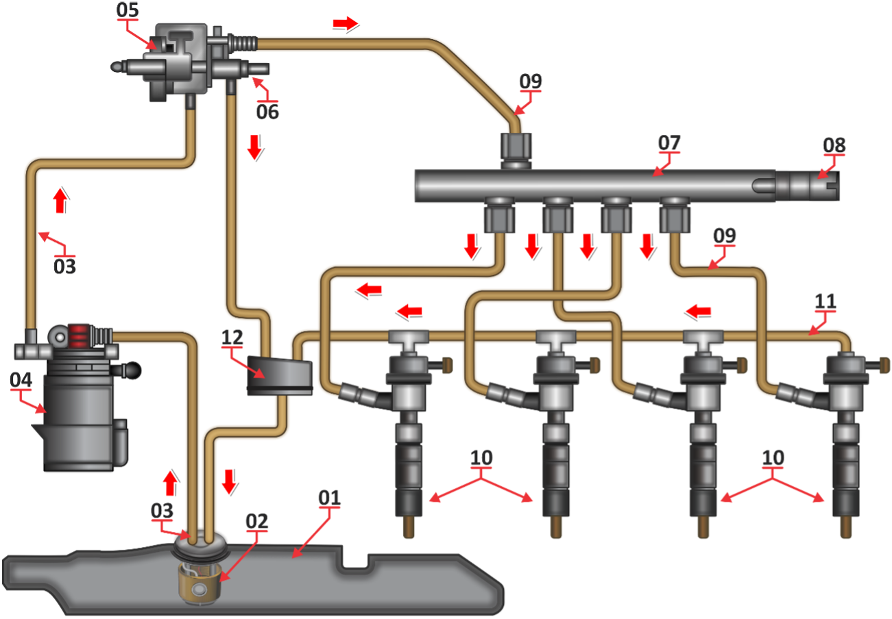
Sistema de alimentação
Circuito de alimentação de combustível:
1 - Tanque de Combustível;
2 - Bomba de Combustível;
3 - Linha de Combustível;
4 - Filtro de Combustível;
5 - Bomba de Alta Pressão;
6 - Regulador de Pressão;
7 - Common Rail;
8 - Sensor de Pressão;
9 - Linha de Alta Pressão;
10 - Injetores;
11 - Linha de Retorno;
12 - Reservatório de Retorno de combustível.
Sistema de alimentação
Circuito de alimentação de combustível:
- Tanque de combustível: Depósito para armazenamento de combustível durante os períodos de operação;
- Fabricado de polietileno;
- Deve ter autonomia de uma jornada de trabalho;
- Copo sedimentador: Função de decantar a água;
- É o componente que permite drenar a água;
- Sistema modernos não apresentam copo de sedimentação.
Sistema de alimentação
Circuito de alimentação de combustível:
- Bomba alimentadora: Tem a função de retirar o óleo Diesel do tanque e colocar pressão para que o combustível passe pelos filtros e atinja a bomba injetora;
- Permite a realização da sangria do combustível (processo de remover o ar das mangueiras após a troca de filtro ou por demais fatores).
- Equipamentos modernos é de funcionamento elétrico;
- Filtros: têm a função de reter as partículas de impurezas presentes no combustível.
Sistema de alimentação
Circuito de alimentação de combustível:
Cuidado com abastecimento:
- É recomendado realizar o abastecimento do tanque de combustível após a jornada de trabalho (à noite). Isso evita a formação de gotículas de água que podem danificar o motor.
- Outro fator que favorece o abastecimento durante a noite é que realizar o abastecimento pela manhã, antes da jornada de trabalho, pode provocar a movimentação dos sedimentos acumulados no fundo do tanque, o que pode danificar o sistema de filtragem.
Sistema de alimentação
Circuito de alimentação de combustível:
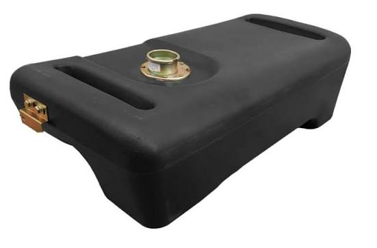
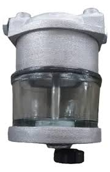
Sistema de alimentação
Circuito de alimentação de combustível:
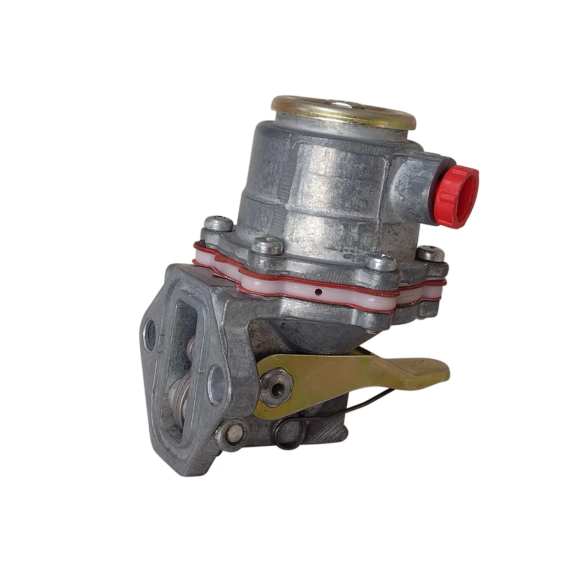
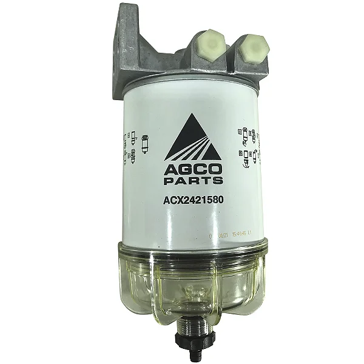
Sistema de alimentação
Circuito de alimentação de combustível:
- Bomba injetora: Localizada entre os filtros de combustível e os bicos injetores, tem por função gerar uma vazão de combustível sob pressão, comprimindo o combustível até os bicos injetores;
- Alta pressão é necessária para atomizar o combustível.
- Bombas rotativas, pistão e eletrônica.
- A injeção eletrônica: Sistema de controle de combustível de alta eficiência e de baixa emissão (dosagem precisa).
Sistema de alimentação
Circuito de alimentação de combustível:
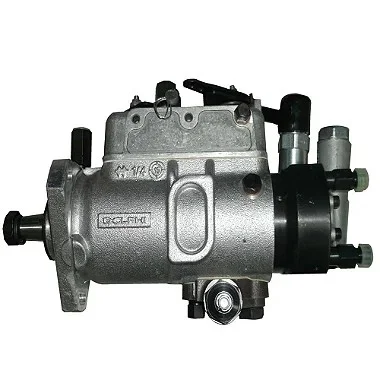
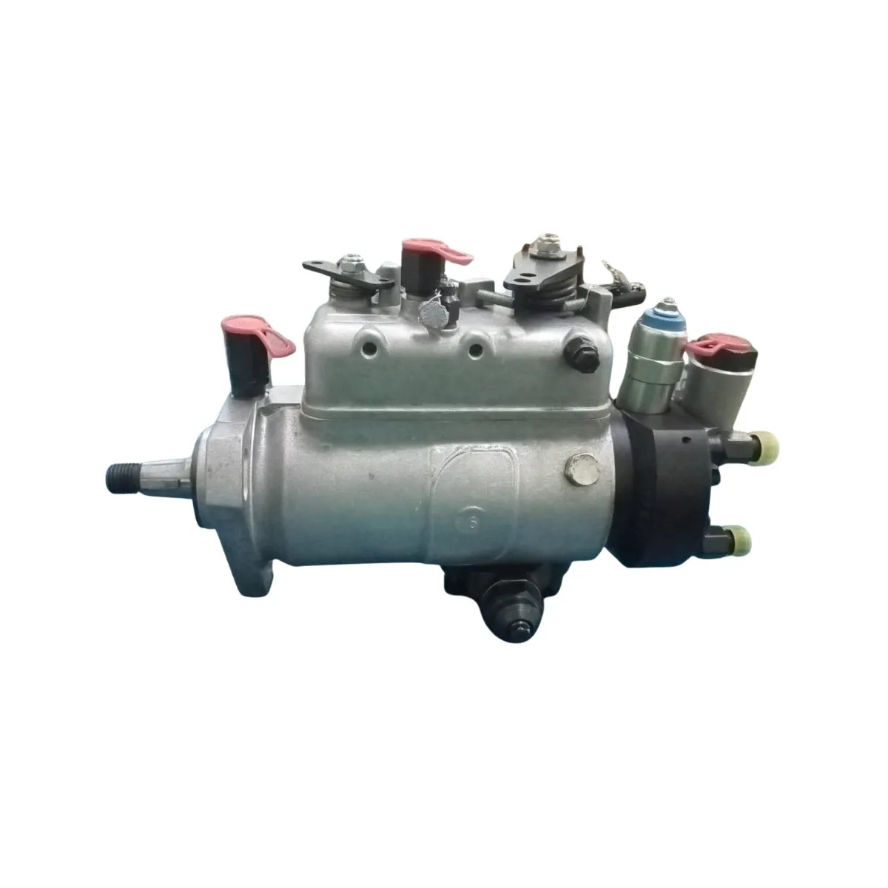
Sistema de alimentação
Circuito de alimentação de combustível:
- Bicos injetores: São responsáveis por injetar o combustível de forma atomizada na câmara de combustão;
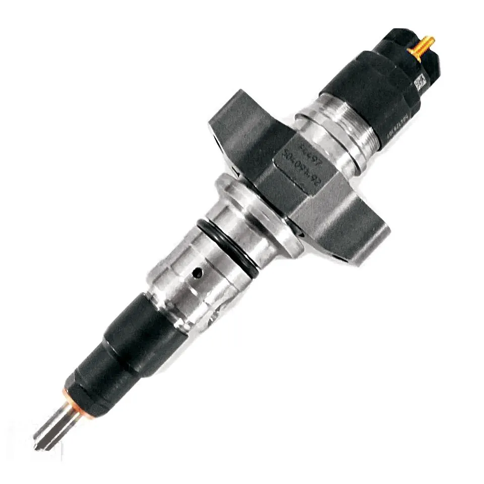
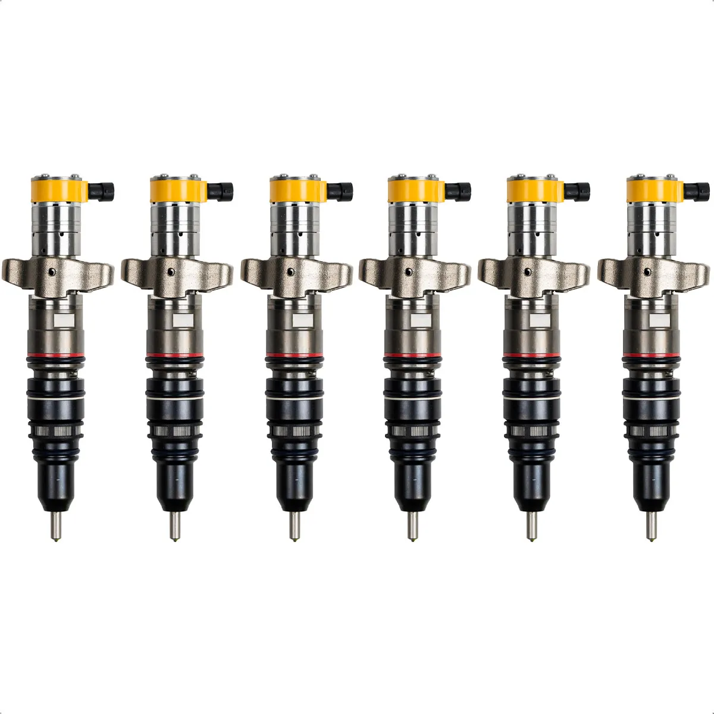
Sistema de alimentação
Circuito de alimentação de combustível:
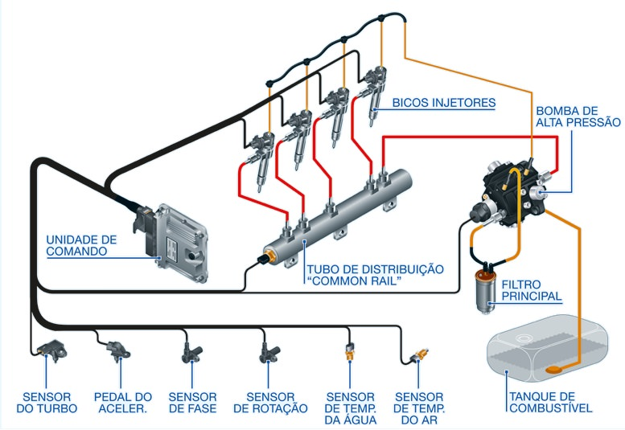
Sistema de alimentação
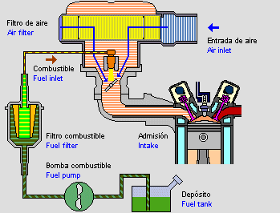
Sistema de arrefecimento
Sistema de arrefecimento
A conversão da energia química do combustível para energia térmica depende de um ambiente com uma variação controlada de temperatura.
O sistema de arrefecimento é o responsável por manter adequada a temperatura interna do motor e promover maior eficiência.
- Apenas 25 a 35% da energia é convertida em trabalho.
- 65 a 75% é perdido na forma de calor.
- Esse calor é transferido ao meio externo (ambiente) pelo sistema de arrefecimento;
- Podem ser do tipo: ar, água ou ar e água;
- Motores agrícolas usam sistema de arrefecimento por água.
- Superaquecimento só ocorrerá se faltar água.
Sistema de arrefecimento
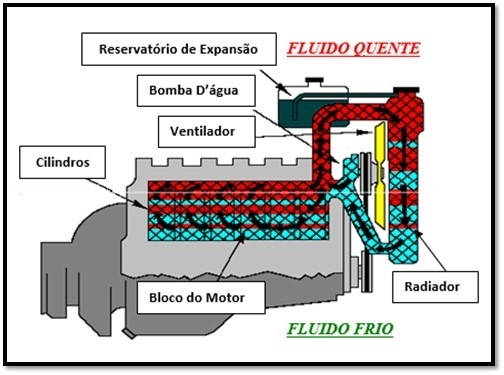
Sistema de arrefecimento
Arrefecimento a água é controlado por meio da válvula termostática.
- Bloqueia a passagem do líquido de arrefecimento, do motor para o radiador, quando o motor estiver abaixo da temperatura de trabalho;
- Quando a temperatura ultrapassa a temperatura de trabalho, a válvula se abre e permite a passagem de líquido para o radiador.
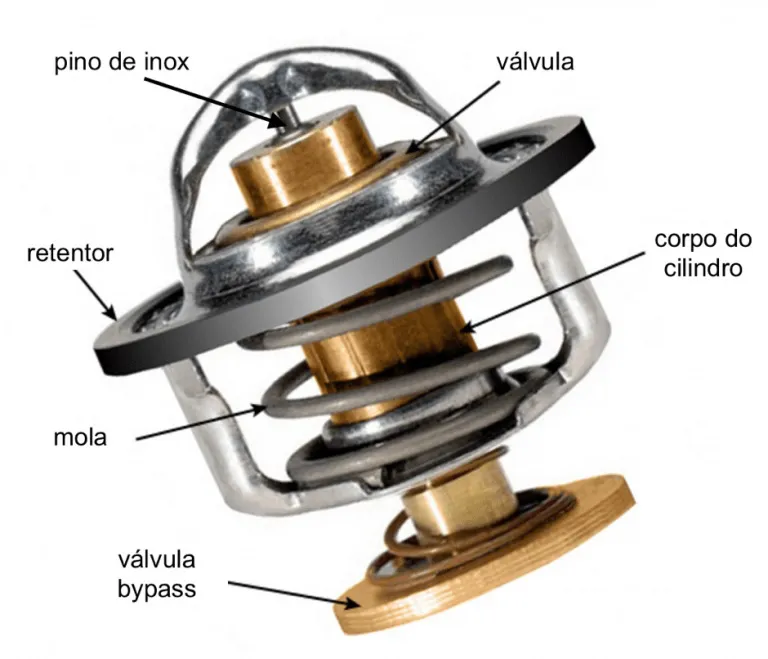
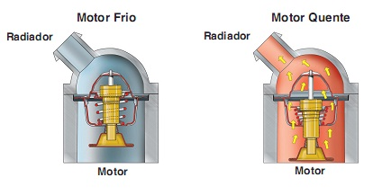
Sistema de arrefecimento
Radiador
Função de trocar calor com o ambiente
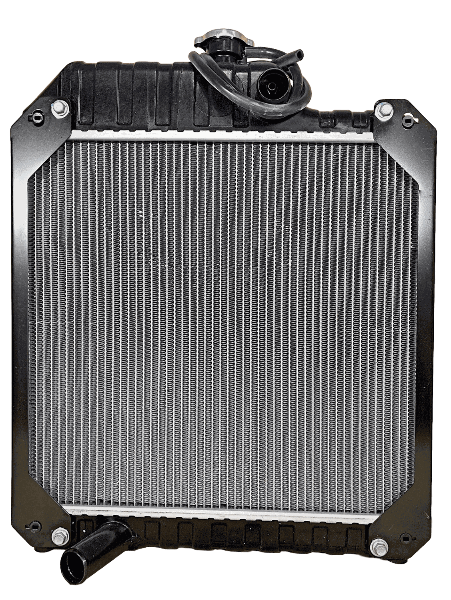
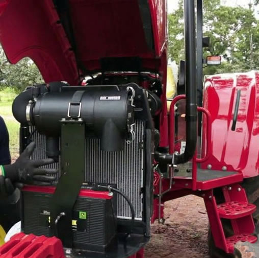
Sistema de arrefecimento
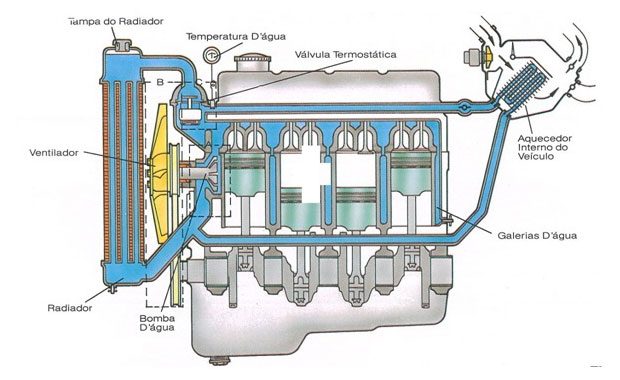
Sistema de arrefecimento
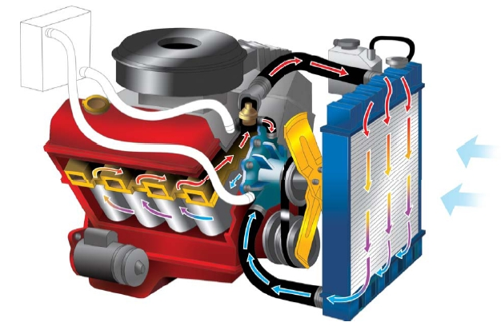
Sistema de lubrificação
Sistema de lubrificação
Os movimentos relativos de peças do motor geram atrito e provocam aquecimento e desgaste do motor. A lubrificação é a interposição de substâncias oleosas entre as superfícies que estão em contato.
- Reduz o aquecimento e o desgaste dos componentes;
- Película oleosa entre peças.
Sistema de lubrificação
Funções básicas:
- Permitir a formação de uma película de óleo lubrificante na interface de contato entre as superfícies móveis.
- Reduzir atrito;
- Minimizar perda de energia mecânica;
- Minimizar desgaste;
- Tornar suave o movimento do motor.
- Permitir a circulação ininterrupta de óleo lubrificante nos pontos que exigem;
- Manutenção da temperatura;
- Limpeza dos pontos de lubrificação;
- Remoção de resíduos da combustão;
- Vedação do espaço entre a parede do cilindro e os anéis do pistão;
- Amortecer choques (ruídos);
Sistema de lubrificação
Circuito de lubrificação:
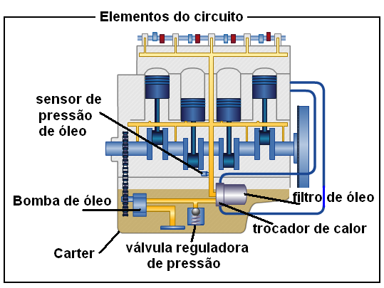
Sistema de lubrificação
Sistema sob pressão:
- Cárter: reservatório armazenador do óleo lubrificante;
- Local onde há a bomba de óleo;
- Bomba de óleo: responsável por distribuir o óleo armazenado no cárter para os componentes internos do motor;
- Válvula reguladora de pressão: próxima à saída da bomba, mantém constante a pressão, vazão uniforme;
- Filtros: retém as impurezas do óleo lubrificante;
- Manômetros: indicador da pressão do óleo, por meio da medição da resistência que o óleo encontra ao ser forçado a passar pelo sistema.
Sistema de lubrificação
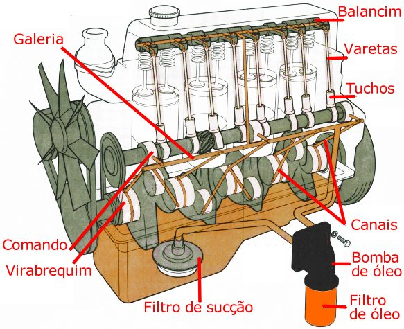
Sistema de lubrificação
Cuide do nível do óleo!
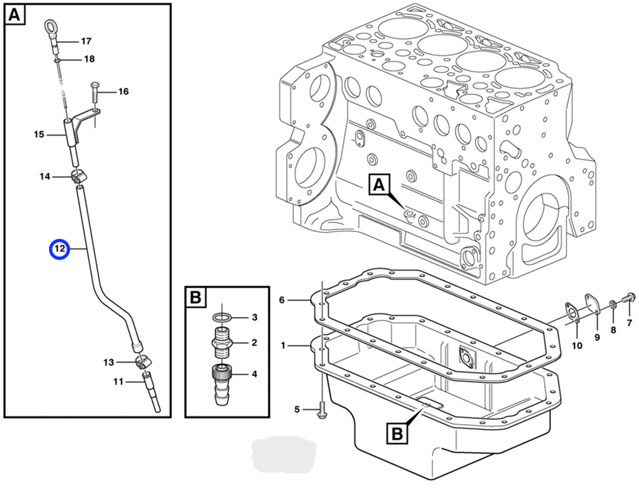
Sistema de partida
Sistema de partida
Sistema responsável pelas primeiras explosões e movimentação do motor.
Primeira energia fornecida ao motor.
Sistema de partida
Pode ser manual, com motores a gasolina, com gasolina ou elétrico
- Manual é encontrado em motores Diesel monocilíndricos;
- Manual por manivela: O motor é iniciado girando a árvore de manivelas até rotação suficiente;
- Manual por corda: O acionamento se dá pelo puxar de uma corda (ex: motosserras) enrolada no volante;
- Com motores a gasolina: Sistema de acionamento é composto por um motor a gasolina (manual) que transmite a energia ao motor a Diesel via engrenagens;
Sistema de partida
- Com gasolina: Válvula de arranque, é câmara auxiliar com vela de ignição (válvula reduz a razão de compressão e motor funciona como um ciclo Otto e depois se altera para ciclo Diesel);
- Elétrico: É um sistema mais complexo com motor de partida (motor de arranque).
Sistema de partida
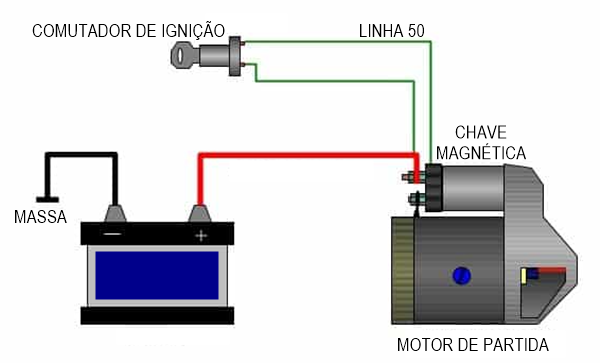
Sistema de partida
A energia da bateria é transferida após o giro da chave de ignição. Um motor elétrico, denominado motor de arranque, é acionado e conectado ao volante do motor. Essa conexão é realizada por meio de duas engrenagens: o pinhão e a coroa.
O pinhão é movimentado e se acopla à coroa do volante. Após o acoplamento, o motor de arranque transfere o movimento necessário para iniciar a rotação do motor. Quando o motor entra em funcionamento, o pinhão é automaticamente desacoplado da coroa.
Sistema de partida
Sistema de exaustão
Sistema de exaustão
Funções:
- Conduzir os gases de escape: gases produzidos são descarregados na atmosfera;
- Purificar os gases de escape: remover componentes químicos nocivos e partículas poluentes;
- Reduzir o ruído do escape: amortecer o ruído para o mínimo permitido (preservação da audição).
Sistema de exaustão
| Contaminante químico | Observação | Concentração (ppm) |
|---|---|---|
| Acetaldeído | Carcinógeno do Grupo 1 da IARC | |
| Acroleína | Provável carcinógeno do Grupo 2A da IARC | |
| Anilina | Provável carcinógeno do Grupo 2A da IARC | |
| Arsênio | Carcinógeno do Grupo 1 da IARC; desregulador endócrino | |
| Benzeno | Carcinógeno do Grupo 1 da IARC | |
| Bifenila | Toxicidade moderada | |
| Bis(2-etil-hexil) ftalato | Desregulador endócrino | |
| 1,3-Butadieno | Carcinógeno do Grupo 1 da IARC | |
| Cádmio | Carcinógeno do Grupo 1 da IARC; desregulador endócrino | |
| Cloro | Subproduto da injeção de ureia | |
| Clorobenzeno | Toxicidade baixa a moderada | |
| Cresol | ||
| Dibutil ftalato | Desregulador endócrino | |
| 1,8-Dinitropireno | Fortemente carcinogênico | |
| Etilbenzeno | ||
| Formaldeído | Carcinógeno do Grupo 1 da IARC | |
| Chumbo inorgânico | Desregulador endócrino | |
| Metanol | ||
| Metil etil cetona | ||
| Naftaleno | Carcinógeno do Grupo 2B da IARC | |
| Níquel | Carcinógeno do Grupo 2B da IARC | |
| 3-Nitrobenzantrona (3-NBA) | Fortemente carcinogênico | 0,6–6 |
| 4-Nitrobifenila | Irritante; causa danos aos nervos, fígado e rins | 2,2 |
| Fenol | ||
| Fósforo | ||
| Pireno | 3532–8002 | |
| Benzo(e)pireno | 487–946 | |
| Benzo(a)pireno | Carcinógeno do Grupo 1 da IARC | 208–558 |
| Fluoranteno | Possível carcinógeno do Grupo 3 da IARC | 3399–7321 |
| Propionaldeído | ||
| Estireno | Carcinógeno do Grupo 2B da IARC | |
| Tolueno | Possível carcinógeno do Grupo 3 da IARC | |
| Xileno | Possível carcinógeno do Grupo 3 da IARC |
Sistema de exaustão
Sistemas de pós-tratamento:
São sistemas para melhorar o tratamento dado aos gases emitidos
- Recirculação dos gases de escape: EGR;
- Introduz gás não reativo (já queimado) para a câmara de combustão;
- Reduz a temperatura e produz menos NOx;
- Reduz a eficiência térmica;
- Redução catalítica seletiva: SCR;
- Injeta um agente redutor líquido (ex: ARLA 32);
- Reações químicas que convertem o NOx em N2, água e CO2.
Sistema de exaustão
Sistemas EGR:
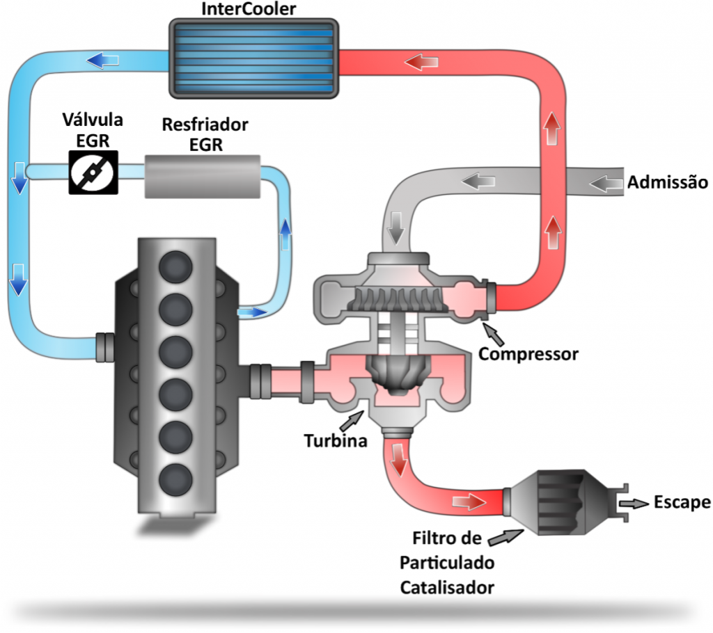
Sistema de exaustão
Sistemas SCR:
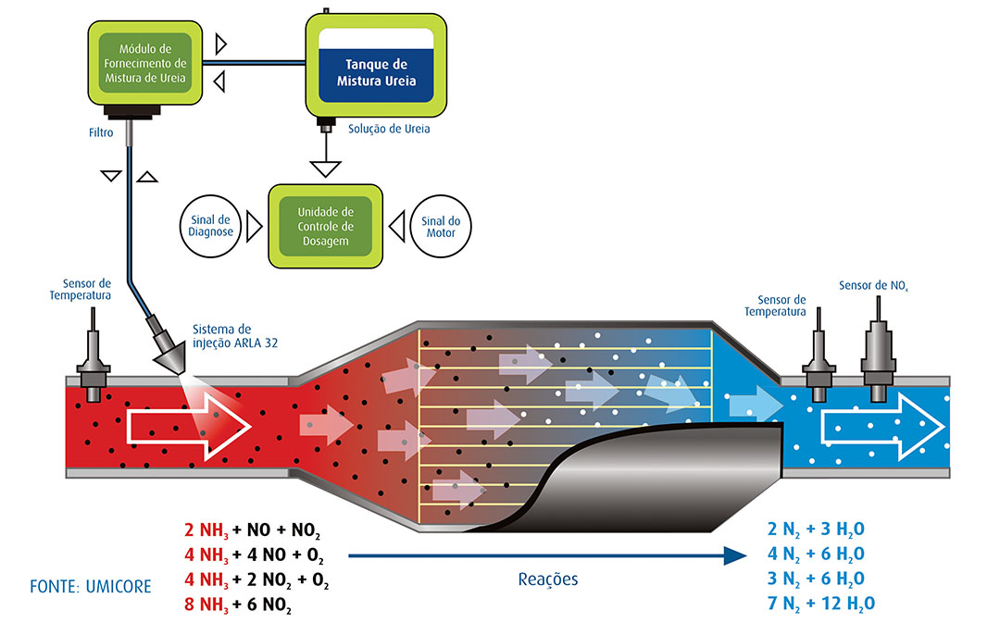
Sistema de exaustão
Transformação da ureia:
\[H_2NCONH_2 + H_2O = 2NH_3 + CO_2\]
\[8NH_3 + 6NO_2 = 7N_2 + 12H_2\]
Combustível
Combustível
Qualquer substância cuja reação de oxidação-redução é altamente exotérmica.
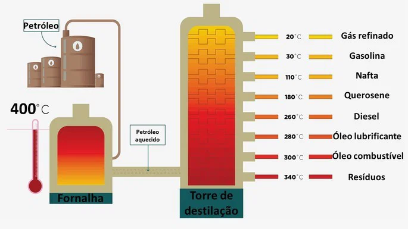
Podemos criar petróleo?
Combustível
A maioria dos combustíveis utilizados hoje é derivada do petróleo.
Com o devido processamento e refino, novos combustíveis alternativos com propriedades semelhantes ou iguais às do petróleo serão descobertos.
Existirá um dia em que o petróleo será esgotado!
Combustível
Qual a principal vantagem dos combustíveis à base de petróleo?
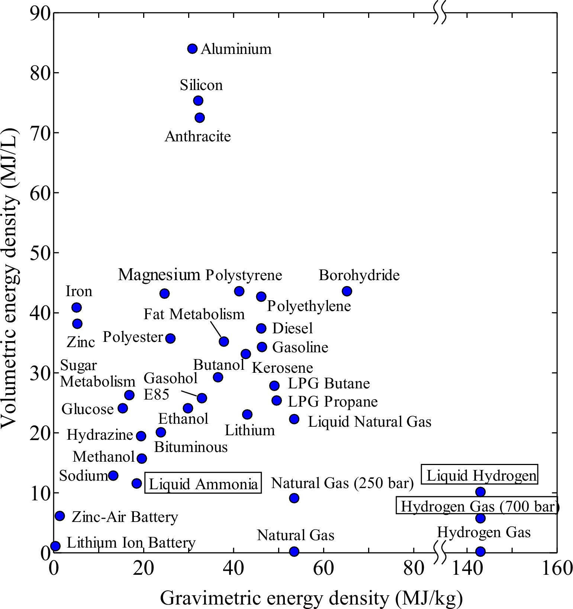
Combustível
Octanagem:
É o índice de octano (C8H18), uma medida da resistência do combustível à compressão (escala de 0 a 100). - Quanto mais elevado, maior a capacidade de ser comprimido na câmara de combustão sem que ocorra a autoignição.
Cetanagem:
É o número de cetano, índice que mede a qualidade de ignição de um combustível utilizado em um motor de ciclo Diesel. - Quanto maior for o valor, menor será o tempo para queima.
Combustível
Octanagem x Cetanagem
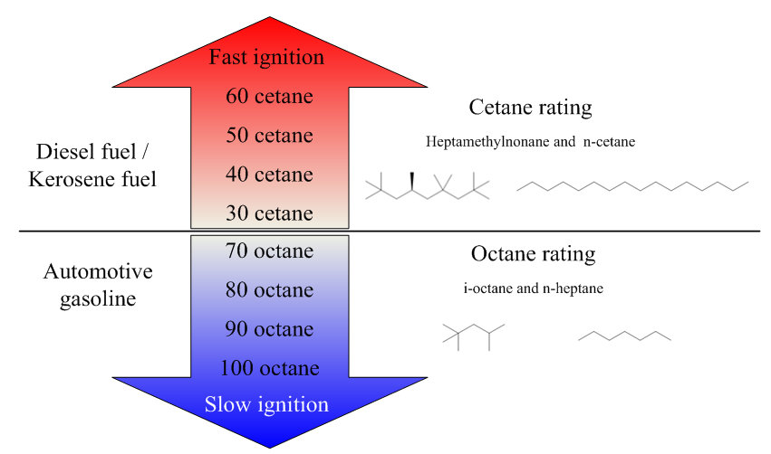
Combustível
Gasolina:
Mistura inflamável de hidrocarbonetos de cadeias carbônicas menores (5 a 10 C).
- Tipo A (sem etanol);
- Tipo C (etanol anidro);
Combustível
Gasolina:
Apenas a tipo C é comercializada no Brasil
| Característica | C-Comum | C-Premium |
|---|---|---|
| Cor | Amarelada | Levemente alaranjada |
| Octanagem min | 87 | 91 |
| Enxofre max (ppm) | 50 | 50 |
| Aditivos | Pode conter | Contém |
Combustível
Diesel:
Tipos:
- Óleo Diesel S10 e S500 de uso rodoviário:
- Veículos automotivos;
- Máquinas agrícolas;
- Máquinas de construção;
- Máquinas industriais;
- Óleo Diesel S1800 de uso não rodoviário:
- Mineração a céu aberto;
- Transporte ferroviário;
- Óleo Diesel marítimo:
- Embarcações.
Combustível
Diesel:
S10 e S500 = S é o símbolo do elemento enxofre (presente de forma natural no combustível).
| Característica | S10 | S500 |
|---|---|---|
| Cor | Incolor a amarelado | Vermelho |
| Enxofre (ppm) | 10 | 500 |
| Lubricidade | Baixa | Alta |
| Poluentes | Menos | Mais |
| Número de cetano | 48 | 42 |
| Desempenho | Mais eficiente | Menos eficiente |
| Quantidade de hidrogênio | Mais | Menos |
| Capacidade de solubilizar sedimentos | Maior | Menor |
Combustível
Alternativos:
| Categoria | Combustível | Sigla/descrição |
|---|---|---|
| Líquidos viscosos (bioDiesel) | Éster metílico de óleos vegetais | |
| Éster metílico de gorduras animais | ||
| Resíduos de óleo de cozinha | ||
| Óleo vegetal hidrotratado | HVO | |
| Líquidos não viscosos | Álcool de cana-de-açúcar | |
| Álcool de celulose | ||
| Álcool de cereais | ||
| Álcool de beterraba sacarina | ||
| Éter dimetílico | DME | |
| Gases | Gás natural comprimido | GNC |
| Gás liquefeito de petróleo | GLP | |
| Biogás | ||
| Hidrogênio | ||
| Sintéticos | Gás para líquido | GTL |
| Carvão liquefeito | CTL | |
| Biomassa para líquido | BTL |
Lubrificantes
Lubrificantes
Funções primárias:
Limitar e controlar o atrito, prevenção ao superaquecimento, reduzir desgaste e proteção contra a corrosão.
Funções secundárias:
Remoção de contaminantes, vedação, amortecimento e isolamento térmico.
Lubrificantes
As características do óleo lubrificante interferem em suas funções.
A origem e a composição dos óleos modificam o objetivo e suas propriedades
Origem: animal, vegetal, mineral e sintética
Aditivos: anticorrosivos, detergentes, dispersantes, etc.
Lubrificantes
Características importantes:
- Viscosidade: indica a resistência ao escoamento;
- Índice de viscosidade: variação da viscosidade em relação a uma faixa de temperatura;
- Densidade: relação entre a massa e o volume.
Lubrificantes
Viscosidade e temperatura:
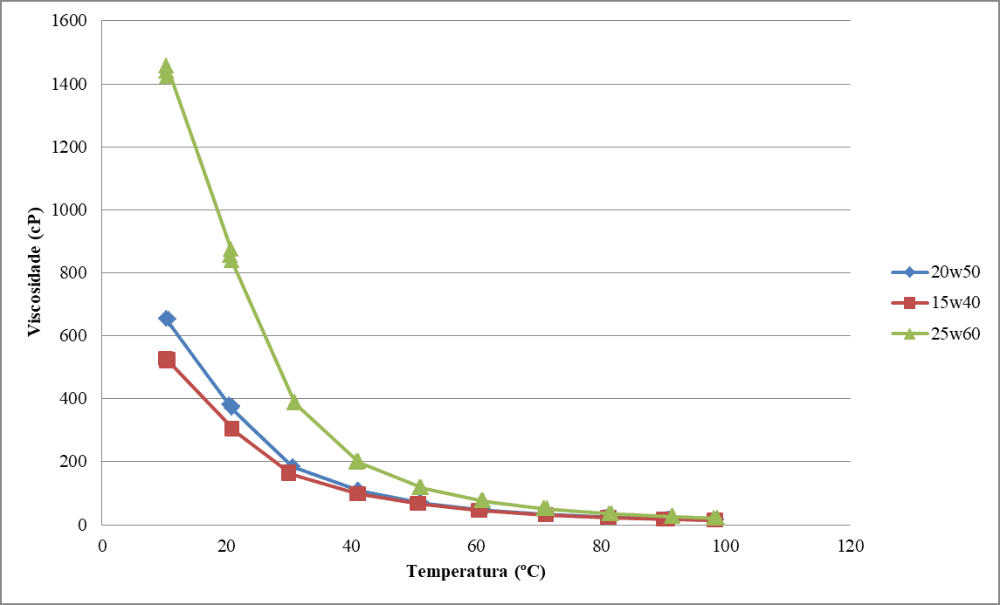
Chiarello, et al. (2019)
Lubrificantes
Sistemas de classificação:
- SAE: Society of Automotive Engineers;
- API: American Petroleum Institute;
- ACEA: European Automobile Manufacturers Association
Lubrificantes
Sistemas de classificação SAE:
Classifica os lubrificantes com base na viscosidade, sem considerar fatores relativos ao desempenho e serviço
Os lubrificantes são divididos em dois grupos
- Monoviscosos: identificados por um único número;
- Multiviscosos: identificados por dois números separados pela letra “W” (winter = inverno).
Lubrificantes
Sistemas de classificação SAE:
Exemplos:
- O óleo SAE 10W possui uma baixa viscosidade e é adequado para ambiente de baixa temperatura (monograu).
- O óleo SAE 40 possui alta viscosidade (proteção ao motor) e é adequado para ambiente de alta temperatura (monograu).
- O óleo SAE 10W40 pode trabalhar tanto em baixa como em alta temperatura e possui uma viscosidade mais complexa (multigrau).
Lubrificantes
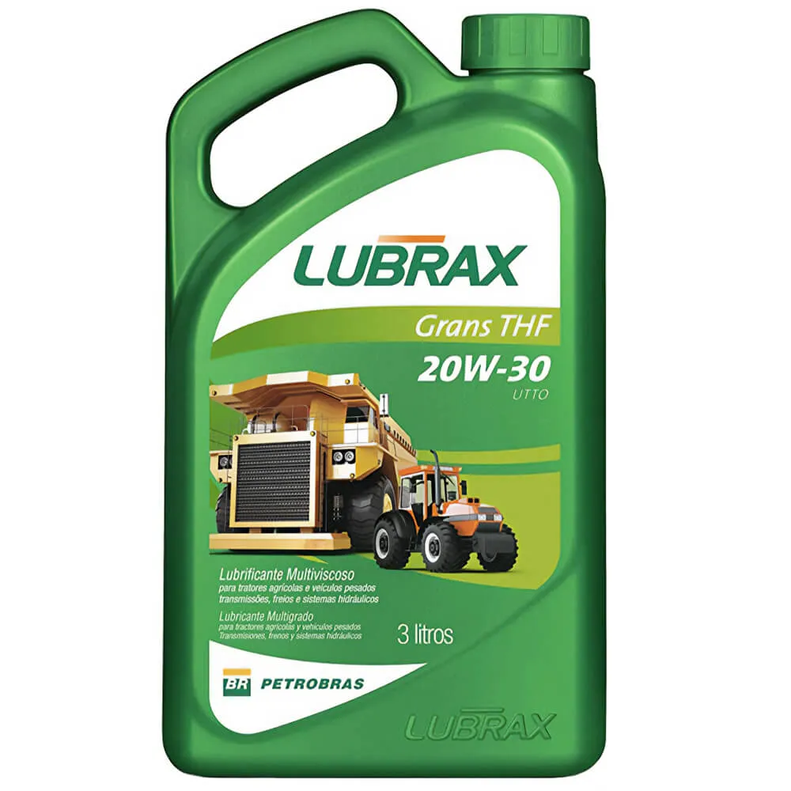
Lubrificantes
Sistemas de classificação SAE:
| Grau de viscosidade SAE | Viscosidade máxima para acionamento em baixa temperatura (MPa·s) | Temperatura (°C) | Viscosidade máxima para bombeamento em baixa temperatura (MPa·s) | Temperatura (°C) | Viscosidade cinemática a 100 °C — Mínimo (mm²/s) | Máximo (mm²/s) | Alta viscosidade de cisalhamento (cP) |
|---|---|---|---|---|---|---|---|
| 0W | < 6200 | -35 | < 60000 | -40 | 3,8 | - | - |
| 5W | < 6600 | -30 | < 60000 | -35 | 3,8 | - | - |
| 10W | < 7000 | -25 | < 60000 | -30 | 4,1 | - | - |
| 15W | < 7000 | -20 | < 60000 | -25 | 5,6 | - | - |
| 20W | < 9500 | -15 | < 60000 | -20 | 5,6 | - | - |
| 25W | < 13000 | -10 | < 60000 | -15 | 9,3 | - | - |
| 8 | - | - | - | - | 4,0 | < 6,1 | 1,7 |
| 12 | - | - | - | - | 5,0 | < 7,1 | 2,0 |
| 16 | - | - | - | - | 6,1 | < 8,2 | 2,3 |
| 20 | - | - | - | - | 6,9 | < 9,3 | 2,6 |
| 30 | - | - | - | - | 9,3 | < 12,5 | 2,9 |
| 40¹ | - | - | - | - | 12,5 | < 16,3 | 3,5 |
| 40² | - | - | - | - | 12,5 | < 16,3 | 3,7 |
| 50 | - | - | - | - | 16,3 | < 21,9 | 3,7 |
| 60 | - | - | - | - | 21,9 | < 26,1 | 3,7 |
Lubrificantes
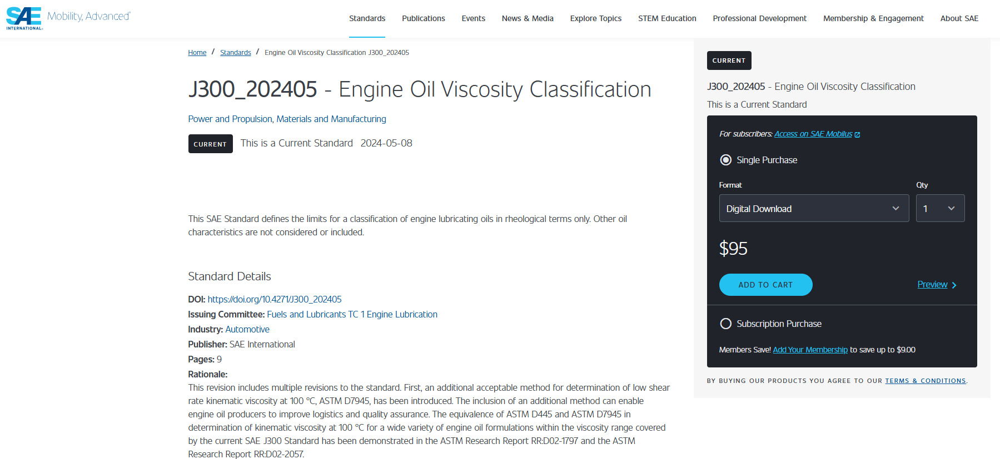
Lubrificantes
Sistemas de classificação API:
Classifica os lubrificantes com base no desempenho.
Os lubrificantes são divididos em dois grupos
- Série S (Spark ignition = ignição por faísca): destinados a motores de ciclo Otto;
- Série C (Compression ignition = ignição por compressão): destinados a motores ciclo Diesel.
Lubrificantes
Sistemas de classificação API:
O segundo algarismo informa o nível de qualidade do óleo lubrificante, em ordem alfabética.
Lubrificantes
| Categoria API | Status | Serviço1 |
|---|---|---|
| CK-4 | Atual | Atende aos padrões de 2017 |
| CJ-4 | Atual | Atende aos padrões de 2010 |
| CI-4 | Atual | Atende aos padrões de 2010 |
| CH-4 | Atual | Atende aos padrões de 1998 |
| CG-4 | Obsoleto | Não adequado após 2009 |
| CF-4 | Obsoleto | Não adequado após 2009 |
| CF-2 | Obsoleto | Não adequado após 2009 |
| CF | Obsoleto | Não adequado após 2009 |
| CE | Obsoleto | Não adequado após 1994 |
| CD-II | Obsoleto | Não adequado após 1994 |
| CD | Obsoleto | Não adequado após 1994 |
| CC | Obsoleto | Não adequado após 1990 |
| CB | Obsoleto | Não adequado após 1961 |
| CA | Obsoleto | Não adequado após 1959 |
| FA-42 | Atual | Atende aos padrões de 2017 |
Lubrificantes
Sistemas de classificação ACEA:
Baseado nos requisitos europeus.
Faz o uso de letras para definir a aplicação e algarismos (1 a 7) para características do lubrificante.
- A é para veículos de passeio (gasolina e/ou etanol);
- B e C para veículos leves;
- E para veículos pesados (Diesel).
Fim!